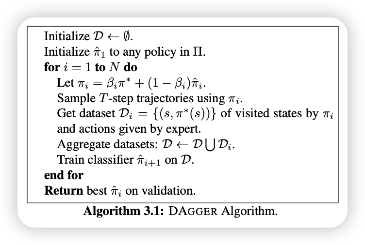

UCB CS285: Deep Reinforcement Learning
This is a collection of notes and code for the UCB CS285: Deep Reinforcement Learning course. The course covers various topics in reinforcement learning, including policy gradients, actor-critic methods, deep Q-learning, and different exploration strategies. The course is designed to provide a comprehensive understanding of deep reinforcement learning and its applications.
There are total
Terminology & Notation
| Term | Symbol | Definition | Notes |
|---|---|---|---|
| Observation | \(o_t\) | What the agent perceives from the environment (e.g., camera image). | May be partial or noisy; does not always uniquely determine the state. |
| Action | \(a_t\) | Decision taken by the agent at time \(t\). | Can be discrete (e.g., “left”, “right”) or continuous (e.g., steering angle). |
| Policy | \(\pi_\theta\) | Mapping from observation (or state) to action (or distribution over actions). | \(\theta\) are the learnable parameters (e.g., neural network weights). |
| State | \(s_t\) | True, complete description of the environment at time \(t\). | Underlies the observation; satisfies the Markov property. |
| Markov Property | \(\begin{gather*} P(s_{t+1} \mid s_t, a_t) \\ = P(s_{t+1} \mid s_{<t}, a_{<t}) \end{gather*}\) | Future state depends only on current state and action: \(P(s_{t+1} \mid s_t, a_t)\). | Defines the concept of a state in decision processes. |
| Behavioral Cloning | \(\min_\theta , \mathbb{E}{(s_t, a_t) \sim \mathcal{D}} \left[ \mathcal{L} \left( \pi\theta(s_t), a_t \right) \right]\) | Supervised learning method to mimic expert behavior by training on \((o_t, a_t)\) pairs. | Can suffer from compounding error due to distribution shift. |
| Stochastic Policy | \(a_t \sim \pi(a_t \mid o_t)\) | Outputs a probability distribution over actions. | More general and often preferred for optimization. |
| Deterministic Policy | \(a_t = \pi_\theta(o_t)\) | Always outputs the same action for a given input. | Special case of a stochastic policy. |
| Transition Model | \(P(s_{t+1} \mid s_t, a_t)\) | Defines how the environment evolves from state to state. | Captures system dynamics (e.g., physics). |
| DAgger | – | Imitation learning algorithm that mitigates compounding error by iterative expert feedback. | Will be implemented in homework and discussed in Part 2. |
There are total of 23 lectures in this course, each lecture covers a specific topic in reinforcement learning. The Lecture 01 introduces the course and provides an overview of reinforcement learning, while the subsequent lectures delve into specific algorithms and techniques.
1 Lecture 01: Introduction & Overview
Lecture 01 introduces the course and provides an overview of reinforcement learning. It covers the basic concepts of reinforcement learning, including:
- the agent-environment interaction,
- rewards
- policies
It first introduce an example of Robotic Grasping (Video 1). In this example, the goal is to build a systems for robotic object grasping. This is non-trivial problem, because of object variability, such as rigid, deformable, and articulated objects. In this case, manually designing every special case is not feasible, so we need to use machine learning algorithms to solve this problem. Instead of hand-engineered logic, use can use ML (e.g., CNNs) to learn grasp strategies from data. However, the in the traditional ML algorithms, we requires a bunch of labeled data, which is hard to obtain in the real world. So, is there a way to learn from the data without the labels? The answer is yes, we can use Reinforcement Learning (RL) to solve this problem.
RL allows robots to learn from trial and error, rather than human labels. To be more specific, instead of providing a the correct action for each state, we give the robot a reward signal (e.g., success / failure), which tells the robot how well it is doing. The robot can then use this reward signal to learn a policy that maximizes the cumulative reward over time.
Until recently (2023), massive progress in generative models: DALL-E, Stable Diffusion, GPT, etc. These model use supervised learning or density estimation (e.g., \(P(x), P(y|x)\)) on human-generated data. This is effective when the goal is to replicate human-like data/ behavior. In this context, we just learning the distribution of the dataset in different fancy ways, so it’s only as good as the data we have, which means it mimic human outputs, but may not generalize well or innovate.
With the development of deep learning and hardware, RL has become a powerful tool for solving complex problems. When combines large-scale optimization (e.g., deep nets) with RL principles, we can build systems that can learn to solve complex tasks, and might emerge new capabilities that were not explicitly programmed – e.g. AlphaGo’s famous “move 37”.
1.0.1 What is Reinforcement Learning?
RL is both a mathematical formalism and an approach for learning decision-making from experience. It distnguish between the problem (sequential decision-making) and the solution (learning a policy). One main difference between RL and other machine learning approaches is the data:
- Supervised learning assumes I.I.D. labeled data \((X, Y)\)
- RL involves sequential, temporally correlated data and often lacks explicit labels – only feedback in terms of rewards.
1.0.2 Credit Assignment Problem
The credit assignment problem is a fundamental challenge in reinforcement learning. It refers to the difficulty of determining which actions in a sequence of actions are responsible for the eventual outcome or reward. In other words, when an agent receives a reward after taking a series of actions, it must figure out which of those actions contributed to the reward and which did not. This is particularly challenging in environments where the effects of actions are delayed or not immediately observable. This illustrates the need for learning from sequences of events and delayed feedback.
The lecture also discusses the different types of reinforcement learning algorithms, such as model-free and model-based methods.
1.0.3 RL in AI Systems(Language & Vision)
With the ChatGPT and other large language models, we can see the power of RL in AI systems. RL is used to fine-tune the models to align with human preferences and to improve their performance on specific tasks. For example, RL can be used to optimize the responses of a language model to make them more coherent and relevant to the user’s query. Similarly, in computer vision, RL can be used to train models to recognize objects and scenes more accurately by providing feedback based on the model’s predictions.
The RL also plays a crucial role in Image Generation: RL optimizes prompts-to-image pipelines using caption feedback.
1.0.4 Sutton’s “The Bitter Lesson”
Richard Sutton argues that learning and search (not manual design) are the scalable paths to intelligence. Scalable learning machines outperform systems engineered by intuition. Learning helps extract patterns; search / optimization helps generate new behaviors. Both necessary for flexible, rational decision-making in real-world problems.
All ML problems (vision, control, language) can be reframed as decision-making problems. For example:
- Vision: Recognizing objects in images is a decision-making problem where the agent must decide which features to focus on and how to classify the objects.
- Control: Controlling a robot is a decision-making problem where the agent must decide which actions to take based on the current state of the environment.
- Language: Generating text is a decision-making problem where the agent must decide which words to use and how to structure the sentences to convey the intended meaning.
Thus, RL applies broadly—even supervised learning is often RL in disguise.
1.0.5 RL Beyond Reward Maximization
RL is not just about maximizing rewards, the real-world RL also tackles:
- Reward Inference (inverse RL): Learning the reward function from observed behavior.
- Imitation Learning: Learning from expert demonstrations without explicit rewards.
- Transfer / Meta Learning: Adapting learned policies to new tasks or environments.
- Prediction and Planning: Using learned models to predict future states and plan actions.
1.0.6 Leveraging Pre-trained Models
RT-2 (Brohan et al. 2023) combines VLMs with robot control to complete complex tasks by grounding instructions in internet knowledge and robot experience.
RT‑2 examines how to merge internet‑scale vision‑language (VLM) knowledge with low‑level robotic control, enabling robots to generalize to new objects, environments, and even execute reasoning commands—far beyond the limited distribution of robotics data alone.
Co‑fine‑tuning strategy: they train a pre‑trained VLM (e.g. PaLI‑X or PaLM‑E) simultaneously on: - Robotic trajectory data (visual frames paired with robot actions), - Internet‑scale vision‑language tasks (like VQA)
They convert low‑level robot actions into discrete text tokens, effectively treating action sequences as if they were normal language output—so the model’s output space covers both natural language and action vocabulary
The difference between Reinforcement Learning and Supervised Learning Algorithms is that: Reinforcement Learning not just trying to copy everything from data, but use the reward to figure out what should do in order to maximize the cumulative reward, and learned the policy.
- In the Supervised Learning, the data points are assumed i.i.d., while in the reinforcement learning, the data is not i.i.d., previous output might effect the future inputs.
- In the Supervised Learning, the ground truth outputs is known, and the algorithms is trained on the known ground truth, in the RL, the group truth is un-known, we only know the succeeded or failed (rewards)
- In the Supervised Learning, the algorithms is trained on the fixed dataset, while in the RL, the algorithms is trained on the online data (the data is generated by the agent itself).
1.0.7 Challenges in Reinforcement Learning
Reinforcement learning faces several challenges, including:
- Scaling RL to Real-World Settings
- While deep learning scales well, RL still struggles to scale to large, open-world, high-dimensional problems (e.g., robotics, autonomous driving).
- Data inefficiency is a major bottleneck.
- Sparse and Delayed Rewards
- Many real-world tasks (e.g., completing a PhD) have rewards that are rare or highly delayed, making it difficult for RL to learn solely from these signals.
- Designing Reward Functions:
- In real tasks (e.g., pouring water), defining a precise reward signal is often as hard as solving the task itself.
- Perception and control are tightly intertwined.
These challenges frame the motivation for deeper research into more sample-efficient, generalizable, and scalable reinforcement learning algorithms—especially those that better mimic how intelligent agents (like humans) learn from limited data and rich interactions.
2 Lecture 02: Supervised Learning of Behaviors (Imitation Learning)
Lecture 02 covers the basics of supervised learning and how it can be used to learn behaviors in reinforcement learning. It discusses the concept of imitation learning, where an agent learns to mimic the behavior of an expert by observing its actions. The lecture also introduces the concept of behavioral cloning, where the agent learns a policy directly from the expert’s actions.
Behavioral Cloning is a specific form of Imitation Learning that treats policy learning as a supervised learning problem using expert demonstrations, while Imitation Learning more broadly includes methods like inverse reinforcement learning and DAgger.
Policies as Supervised Learning Models:
- Policies map observations \(o_t\) to actions \(a_t\)., analogous to supervised learning models how classifiers map \(x \to y\).
- Policies can be deterministic (\(a_t = \pi(o_t)\)) or stochastic (\(a_t \sim \pi(a_t \mid o_t)\)).
Training is done on the expert distribution \(P_{\text{data}}(o_t)\), but execution happens under the learned policy’s distribution \(P_{\pi_\theta}(o_t)\), causing distributional shift, a central issue in imitation learning.
State vs. Observation:
- State: Complete description of the environment at time \(t\).
- Observation: What the agent perceives (e.g., camera image), which may be partial or noisy, which not always sufficient to infer the state.
One of the main assumption in the RL is Markov Property, which states that the future state depends only on the current state and action, not on the previous states or actions.
\[ P(s_{t+1} \mid s_t, a_t) = P(s_{t+1} \mid s_{<t}, a_{<t}) \tag{1}\]
The input to the policy is the observation or state, and the output is the action or distribution over actions. The policy can be deterministic or stochastic, depending on whether it outputs a single action or a probability distribution over actions.
2.1 Behavioral Cloning
Behavioral cloning is a supervised learning approach to imitation learning, where the agent learns a policy by directly mimicking the actions of an expert. The agent is trained on pairs of observations and actions from the expert’s behavior \(\mathcal{D}(o_t, a_t)\), using supervised learning techniques, linear regression, neural networks, etc. The goal is to minimize the difference between the agent’s actions and the expert’s actions.
However, one of the main problems of the behavioral cloning is the compounding error: small prediction errors will lead to unseen states, which can cause the agent to diverge from the expert’s behavior. This is because the agent is trained on the expert’s actions, but when it makes a mistake, it may not be able to recover from it, leading to a snowball effect of errors.
This is called distribution shift: Training is done on the expert distribution \(P_{\text{data}}(o_t)\), but execution happens under the learned policy’s distribution \(P_{\pi_\theta}(o_t)\), causing distributional shift, a central issue in imitation learning.
This is the not the problem in the supervised learning, because in the supervised learning, the data is i.i.d., the output of the model is not dependent on the previous inputs, and will not affect the future inputs. However, in the behavioral cloning, the data is not i.i.d., and the model is trained on the expert’s actions, which may not be the same as the actions taken by the agent during execution.
There are several ways to mitigate the compounding error in behavioral cloning, such as:
- Data Augmentation: Adding noise to the observations or actions to make the agent more robust to small errors.
- Data Collection: Collecting more data from the expert to cover more states and actions.
- More Powerful Models: Using more powerful models (e.g., deep neural networks) to better approximate the expert’s policy.
- DAgger: An iterative algorithm that combines behavioral cloning with online learning, where the agent collects data from its own policy and queries the expert for corrections. This helps the agent to recover from mistakes and improve its performance over time.
2.2 Math explain of Behavioral Cloning
2.3 DAgger Algorithm
DAgger(Dataset Aggregation) (Ross, Gordon, and Bagnell 2011) aims to solve the distributional shift problem in behavioral cloning by iteratively collecting data from the current policy and querying the expert for corrections. The key idea is to change the data collection strategy to better reflect the states the policy actually visits, rather than just improving the policy. It is an iterative process that:
- Start with an initial policy \(\pi_\theta\) trained on expert data.
- At each iteration:
1. Run the current policy to collect new observations from the environment.
2. Get expert labels (actions) for these new observations.
3. Aggregate the new data with the previous dataset.
- Repeat until convergence.
- Over time, the dataset distribution converges to the test-time distribution (\(p_{\pi_\theta}\)).

3 Lecture 03: Introduction to PyTorch
4 Lecture 04: Introduction to Reinforcement Learning
5 Lecture 05: Policy Gradient
let first review the object of the RL. The object of RL algorithm is to maximize the expected cumulative reward under some policy \(\pi\), which is by paramter \(\theta\). The optimal \(\theta\) is defined as:
\[ \theta^* = \arg\max_\theta \mathbb{E}_{\tau \sim p_\theta(\tau)} \left[ \sum_{t=1}^{T} r(s_t, a_t) \right] \]
where \(\tau\) is a trajectory (sequence of states, actions, rewards), and \(r(s_t, a_t)\) is the reward at time \(t\). And we define \(J(\theta)\) as:
\[ J(\theta) = \mathbb{E}_{\tau \sim p_\theta(\tau)} \left[ \sum_{t=1}^{T} r(s_t, a_t) \right] \]
We can evaluate the \(J(\theta)\) using Monte Carlo methods, by sampling trajectories (rollouts) from the policy \(\pi_\theta\) and computing the average return.
\[ J(\theta) \approx \frac{1}{N} \sum_{i=1}^{N} \sum_{t=1}^{T} r(s_t, a_t) \]
And the Policy Gradient methods means, we update the parameters of the policy according to the information of the gradient of \(J(\theta)\). But, first we need to compute the gradient \(\nabla J(\theta)\).
5.1 Gradient Evaluation
The objective is defined as
\[ J(\theta) = \mathbb{E}_{\tau \sim p_\theta(\tau)} \left[r(\tau)\right ] = \int p_\theta(\tau) r(\tau) d\tau \]
So, the gradient can be computed as:
$$ \[\begin{align*} \nabla_\theta J(\theta) &= \nabla_\theta \int p_\theta(\tau) r(\tau) d\tau \\ &= \int \nabla_\theta p_\theta(\tau) r(\tau) d\tau \quad \hfill \text{(Leibniz integral rule)} \\ &= \int p_\theta(\tau) \nabla_\theta \log p_\theta(\tau) r(\tau) d\tau \quad \text{(Log Gradient Trick)} \\ &= \mathbb{E}_{\tau \sim p_\theta(\tau)} \left[ \nabla_\theta \log p_\theta(\tau) r(\tau) \right] \\ &= \mathbb{E}_{\tau \sim p_\theta(\tau)} \left\{ \nabla_\theta\left[ \cancel{\log p(s_1)} + \sum_{t=1}^{T} \bigg(\log \pi_\theta(a_t | s_t) + \cancel{ \log p(s_{t+1} | s_t, a_t)}\bigg) \right] r(\tau) \right\} \\ &= \mathbb{E}_{\tau \sim p_\theta(\tau)} \left\{ \nabla_\theta\left[ \sum_{t=1}^{T} \log \pi_\theta(a_t | s_t) \right] r(\tau)\right\} \\ &\approx \frac{1}{N} \sum_{i=1}^{N} \sum_{t=1}^{T} \nabla_\theta \log \pi_\theta(a_t | s_t) r(\tau) \\ &\approx \frac{1}{N} \sum_{i=1}^{N} \left[ \sum_{t=1}^{T} \nabla_\theta \log \pi_\theta(a_t | s_t) \right] \left[ \sum_{t=1}^{T} r(s_t, a_t) \right] \end{align*}\] $$
There are lot thing going on, let’s break this down step by step.
First, the Leibniz integral rule allows us to differentiate under the integral sign, which is a powerful technique in calculus. In our case, it lets us move the gradient operator inside the integral when computing the gradient of the expected return.
Next, we apply the Log Gradient Trick, which is a key insight in reinforcement learning. It allows us to express the gradient of the expected return in terms of the policy’s log probabilities. This is useful because it connects the policy’s parameters directly to the reward signal, enabling us to compute the policy gradient.
The probability of the trajectory \(p_\theta(\tau)\) is not just depends on \(\pi_\theta\), but also on the dynamics of the environment, \(p(s_{t+1} | s_t, a_t)\). Sometimes we don’t have access to the true dynamics, and we need to rely on the policy’s log probabilities to compute the gradient.
- Finally, we arrive at the empirical estimate of the policy gradient by averaging over multiple trajectories. This is typically done using Monte Carlo sampling, where we collect a batch of trajectories and compute the average gradient across them.
When we get the gradient of the objective function, we can use it to update the policy parameters in the direction that increases the expected return. This is the REINFORCE algorithm.
As we can see, the gradient of the objective function is very similar as the gradient of the loss function we used in supervised learning. For example, in the behavior cloning algorithms, the policy is updated to maximize the likelihood of the actions taken in the expert demonstrations(true actions). And we want to maximize the likelihood of the actions taken in the expert demonstrations(true actions). So, the object is \[ J(\theta) \approx \frac{1}{N} \sum_{i=1}^{N} \left[ \sum_{t=1}^{T} \nabla_\theta \log \pi_\theta(a_t | s_t) \right] \]
So the policy gradient can be view as weighted version of MLE by returns, and the loss is weighted cross entropy. This means, if the action is good(high returns), we want to increase its probability (via gradient ascent by increasing the derivative of the log probability), and if the action is bad(low returns), we want to decrease its probability.
One good thing is that the Markov property is not used in the policy gradient methods, which makes them more flexible and applicable to a wider range of problems. we can use them in partially observable environments as well.
5.2 Reduce Variance
However, one problem of this naive policy gradient algorithm is high variance in the gradient estimates. It’s dig into why this happens. The first thing to note is that the gradient is based on the Monte Carlo Estimation, which means the returns can vary significantly between different trajectories, leading to noisy gradient estimates.The next is the every action’s gradient is multiplied by the total return \(R(\tau)\), even if the action had little effect on that return, which lead to high variance(Credit Assignment Problem). Third, in the finite sampling estimate, if the returns are positive, all the actions will be “reinforced”, even those with little impact on the return.
According to those problems, we can use the following methods to solve the problem:
Add Causality: One approach to reduce variance is to incorporate causal information into the policy gradient estimates. This can be done by using techniques such as counterfactual reasoning or causal inference to better understand the impact of actions on future states and rewards.
Baseline: One common approach is to subtract a baseline from the returns before computing the gradient. This baseline can be the average return or a value function estimate. By reducing the variance of the returns, we can obtain more stable gradient estimates.
Let’s dig into the details of the baseline technique.
5.2.1 Baseline Technique
The baseline technique involves subtracting a baseline value from the returns before computing the policy gradient. This baseline can be the average return or a value function estimate. The key idea is that by reducing the variance of the returns, we can obtain more stable gradient estimates. Why we can substract the basedline from the graidnet estimation?
The reason we can subtract the baseline from the gradient estimation is that it does not change the expected value of the gradient. Mathematically, we can express the policy gradient as:
\[ \nabla J(\theta) = \mathbb{E} \left[ \sum_{t=1}^{T} \nabla_\theta \log \pi_\theta(a_t | s_t) R(\tau) \right] \]
If we introduce a baseline \(b(s_t)\), we can rewrite the policy gradient as:
\[ \begin{align} \nabla J(\theta) &= \mathbb{E}_{\tau \sim p_\theta} \left[ \sum_{t=1}^{T} \nabla_\theta \log \pi_\theta(a_t | s_t) (R(\tau) - b) \right] \\ &= \mathbb{E}_{\tau \sim p_\theta} \left[ \sum_{t=1}^{T} \nabla_\theta \log \pi_\theta(a_t | s_t) R(\tau) \right] - \mathbb{E}_{\tau \sim p_\theta} \left[\sum_{t=1}^{T} \nabla_\theta \log \pi_\theta(a_t | s_t) b \right] \\ &= \mathbb{E}_{\tau \sim p_\theta} \left[ \sum_{t=1}^{T} \nabla_\theta \log \pi_\theta(a_t | s_t) R(\tau) \right] - \int p_\theta(\tau) \nabla_\theta \log p_\theta(a_t | s_t) b d\tau \\ &= \mathbb{E}_{\tau \sim p_\theta} \left[ \sum_{t=1}^{T} \nabla_\theta \log \pi_\theta(a_t | s_t) R(\tau) \right] - b \nabla_\theta \int p_\theta(\tau) d\tau \\ &= \mathbb{E}_{\tau \sim p_\theta} \left[ \sum_{t=1}^{T} \nabla_\theta \log \pi_\theta(a_t | s_t) R(\tau) \right] - b \nabla_\theta 1 \\ &= \mathbb{E}_{\tau \sim p_\theta} \left[ \sum_{t=1}^{T} \nabla_\theta \log \pi_\theta(a_t | s_t) R(\tau) \right] - 0 \\ \end{align} \]
Since the baseline is a function of the state and does not depend on the action taken, it does not affect the expected value of the gradient. By subtracting the baseline, we can reduce the variance of the gradient estimates without introducing bias. So, when subtracting the baseline, we are essentially centering the returns around the baseline, which helps to stabilize the learning process. But, which baseline should we use? let’s derive the best one.
We want to minimize the variance of the estimator, for now, we use \(g(\tau)\) to represent \(\log \pi_\theta(a_t | s_t)\). So, the variance of the estimator can be expressed as: \[ \begin{align} \text{Var}[g(\tau)(r(\tau) - b)] &= \mathbb{E}[g(\tau)^2(r(\tau) - b)^2] - \mathbb{E}[g(\tau)(r(\tau) - b)]^2 \\ &= \mathbb{E}[g(\tau)^2(r(\tau) - b)^2] - \mathbb{E}[g(\tau)r(\tau)]^2 + \mathbb{E}[g(\tau)b]^2 \\ &= \mathbb{E}[g(\tau)^2(r(\tau) - b)^2] - \mathbb{E}[g(\tau)r(\tau)]^2 + 0 \end{align} \]
So, we can see, to minish the variance, we need to minimize \(\mathbb{E}[g(\tau)r(\tau)]\).
\[ E[g^2(r−b)^2]=E[g^2(r^2−2rb+b^2)]=E[g^2r^2]−2bE[g^2r]+b^2E[g^2] \]
Take the derivative with respect to \(b\) and set it to zero to find the optimal baseline:
\[ \frac{d}{db} E[g^2r^2]−2bE[g^2r]+b^2E[g^2] = 0 −2E[g^2r]+2bE[g^2] = 0 \] So, the optimal baseline is given by:
\[ b^* = \frac{E[g^2r]}{E[g^2]} \]
However, in practice, we barely used the optimal baseline. The choice of baseline can significantly impact the performance of the policy gradient algorithm. In many cases, a simple and computationally efficient baseline, such as the average return or a running estimate of the value function, is used instead of the optimal baseline.
5.3 Off-Policy Policy Gradient
The REINFORCE algorithm is an on-policy algorithm, because they require sampling trajectories from the current policy at each update step, the old samples cannot be reused, because the policy is constantly being updated. And we know that neural networks require many small gradient steps, each step demands fresh samples. So, on-policy make the training very costly if the generate samples are not sufficient. So, off-policy methods have been proposed to address this issue by using the old samples to update the current policy. Before we dive into off-policy methods, let’s first understand how to get samples of one distribution from another through important sampling.
5.3.1 Important Sampling
Important sampling is a technique used to estimate the properties of a particular distribution while only having samples generated from a different distribution. It is particularly useful in reinforcement learning when we want to evaluate or optimize a policy using data collected from another policy.
\[ \begin{align} \mathbb{E}_{x \sim P(x)}[f(x)] &= \int \frac{Q(x)}{Q(x)} P(x) f(x) dx \\ &= \int Q(x) \frac{P(x)}{Q(x)} f(x) dx \\ &= \mathbb{E}_{x \sim Q(x)}\left[\frac{P(x)}{Q(x)} f(x)\right] \end{align} \]
where \(P(x)\) is the target distribution, \(Q(x)\) is the proposal distribution, and \(f(x)\) is the function we want to evaluate, and \(\frac{P(x)}{Q(x)}\) is the importance sampling ratio, also known as important weight.
5.3.2 Importance Sampled Policy Gradient
To apply the important sampling on the policy gradient, we can rewrite the policy gradient as:
\[ \begin{align} J(\theta) &= \mathbb{E}_{\tau \sim \tilde{p}(\tau)} \left[ \frac{P(\tau)}{\tilde{P}(\tau)} r(\tau) \right] \\ &= \mathbb{E}_{\tau \sim \tilde{p}(\tau)} \left[ \frac{\cancel{p(s_1)} \prod_{t=1}^T \pi_\theta(a_t|s_t) \cancel{\prod_{t=1}^T p(s_t|s_{t-1},a_{t-1})}}{\cancel{p(s_1)}\prod_{t=1}^T \pi_\tilde{\theta}(a_t|s_t) \cancel{\prod_{t=1}^T p(s_t|s_{t-1},a_{t-1})}} r(\tau) \right] \\ &= \mathbb{E}_{\tau \sim \tilde{p}(\tau)} \left[ \prod_{t=1}^T \frac{\pi_\theta(a_t|s_t)}{\pi_\tilde{\theta}(a_t|s_t)} r(\tau) \right] \end{align} \]
So, the gradient of the objective function become:
\[ \nabla_{\theta}J(\theta) = \mathbb{E}_{\tau \sim \tilde{p}(\tau)} \left[ \prod_{t=1}^T \frac{\pi_\theta(a_t|s_t)}{\pi_\tilde{\theta}(a_t|s_t)} \nabla_{\theta} \log \pi_\theta(a_t|s_t) r(\tau) \right] \]
As we can see, if \(\theta = \tilde{\theta}\), then the importance sampling ratio becomes 1, and we recover the standard policy gradient.
If the importance sampling ratio is very different from 1, it can lead to high variance in the gradient estimate. This is known as the “importance sampling problem” and is a key challenge in off-policy reinforcement learning. One way it to apply causality:
\[ \begin{align} \nabla J(\theta) &= \mathbb{E}_{\tau \sim p_\theta(\tau)} \Bigg[ \left( \prod_{t=1}^T \frac{\pi_{\theta'}(a_t \mid s_t)}{\pi_\theta(a_t \mid s_t)} \right) \left( \sum_{t=1}^T \nabla_{\theta'} \log \pi_{\theta'}(a_t \mid s_t) \right) \left( \sum_{t=1}^T r(s_t, a_t) \right) \Bigg] \\ &= \mathbb{E}_{\tau \sim p_\theta(\tau)} \Bigg[ \left( \sum_{t=1}^T \nabla_{\theta'} \log \pi_{\theta'}(a_t \mid s_t) \right) \left( \prod_{t=1}^T \frac{\pi_{\theta'}(a_t \mid s_t)}{\pi_\theta(a_t \mid s_t)} \right) \left( \sum_{t=1}^T r(s_t, a_t) \right) \Bigg] \end{align} \]
6 Lecture 06: Actor-Critic Methods
7 Assignments
There are total of 5 assignments in this course, from imitation learning to deep Q-Learning. The assignments are designed to help you understand the concepts and algorithms in reinforcement learning, and to implement them in code.